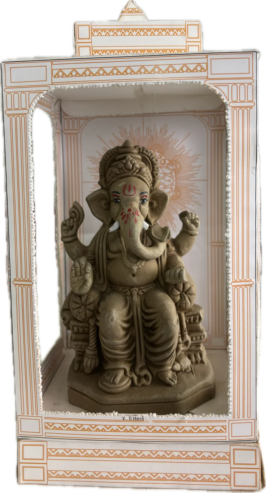

Branding · Packaging · NID Semester 2 · 2026
एक माती
A name, a mark and a temple-shaped box for the GI-tagged clay Ganesh idols of Pen. The idol comes from the river and goes back to it. The box stays, because the box is the temple.
CraftPen, Maharashtra · GI 2024
MadeName, mark, type, colour, temple box
BoxFolds flat, no tape, no plastic

18 · Experience map
From the stall to the river and back to a desk: what the buyer does, thinks and feels at each step of the festival errand, and what the design does in reply.
01
Picks one idol from a row
Which one is from Pen?
02
Walks home in rain
Will it get wet?
03
Tears along the perforation
Just tear along the dots?
04
Folds the arched panel down
Oh.
05
Sets it up with a diya
It fits my desk.
06
Dissolves the idol, keeps the temple
What do I do with the box?
Anticipated, not researched: a designed experience to test with the printed box.